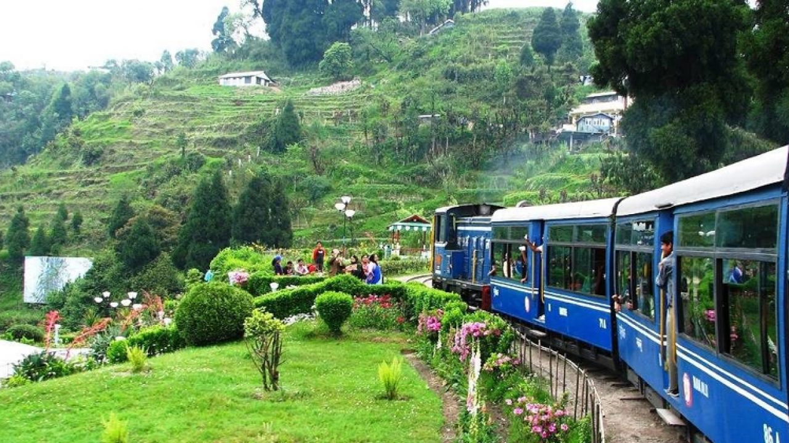
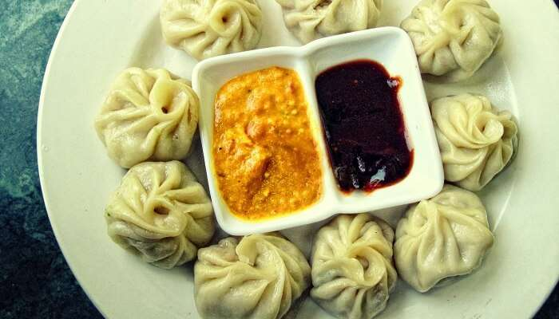
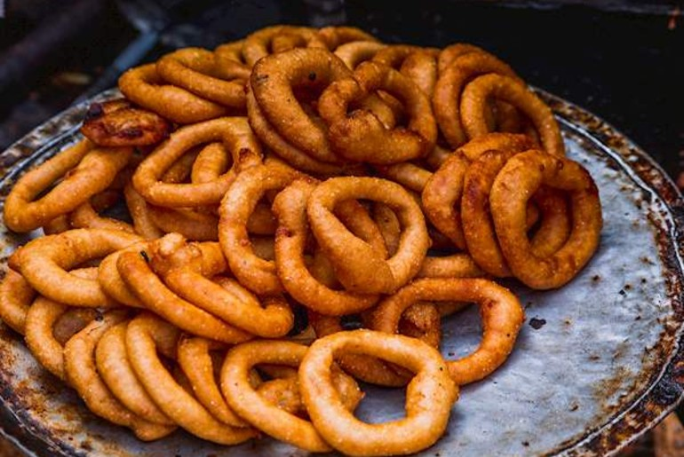
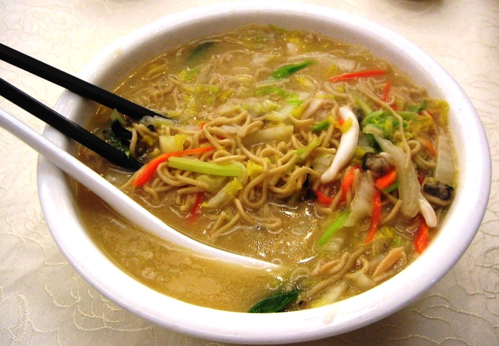

Darjeeling (Bengali: [ˈdarˌdʒiliŋ], Nepali: [darˈd͡ziliŋ]) is a city and a municipality in the Indian state of West Bengal. It is located in the Lesser Himalayas at an elevation of 2,000 metres (6,560 ft). It is noted for its tea industry, its views of the world's third-highest mountain Kangchenjunga, and the Darjeeling Himalayan Railway, a UNESCO World Heritage Site. Darjeeling is the headquarters of the Darjeeling district which has a partially autonomous status called Gorkhaland Territorial Administration within the state of West Bengal. It is also a popular tourist destination in India.
The recorded history of the town starts from the early 19th century when the colonial administration under the British Raj set up a sanatorium and a military depot in the region. Subsequently, extensive tea plantations were established in the region and tea growers developed hybrids of black tea and created new fermentation techniques. The resultant distinctive Darjeeling tea is internationally recognised and ranks among the most popular black teas in the world. The Darjeeling Himalayan Railway connects the town with the plains and has some of the few steam locomotives still in service in India.
Darjeeling has several British-style private schools, which attract pupils from all over India and a few neighbouring countries. The varied culture of the town reflects its diverse demographic milieu comprising Lepcha, Khampa, Gorkha, Kirati, Newar, Sherpa, Bhutia, Bengali and other mainland Indian ethno-linguistic groups. Darjeeling, alongside its neighbouring town of Kalimpong, was the centre of the Gorkhaland social movement in the 1980s and summer 2017.


Tourism:
Tourist inflow into Darjeeling had been affected by the political instability in the region, and agitations in the 1980s and 2000s hit the tourism industry hard. However, since 2012, Darjeeling has once again witnessed a steady inflow of both domestic and international tourists. Presently, around 50,000 foreign and 500,000 domestic tourists visit Darjeeling each year, and its repute as the "Queen of the Hills" remains unaltered. According to an India Today survey published on 23 December 2015, Darjeeling is the third most Googled travel destination among all the tourist destinations in India.Even though there are political instabilities in Darjeeling, its tourism rate is increasing year by year. Many visit this place for food specialities like momos, steamed stick rice, and other steamed foods famous in this region, as well as to see the natural beauty of the area.
Foods:
Food is an inseparable element of culture! And if you love getting close to the cultural side of the destinations your visit, knowing and tasting the food dishes of those places would certainly help. Here are some of the most loved Darjeeling food that you must also taste to know the heart of the city:
- Thukpa. Source Thukpa is essentially a dish of Darjeeling but finds its roots in Tibetan cuisine. ...
- Traditional Nepali Thali. Source A Thali is a platter of various range of foods served on a single plate. ...
- Naga Cuisine. ...
- Churpee. ...
- Momos. ...
- Aloo Dum. ...
- Sael Rotis. ...
- Chaang.


